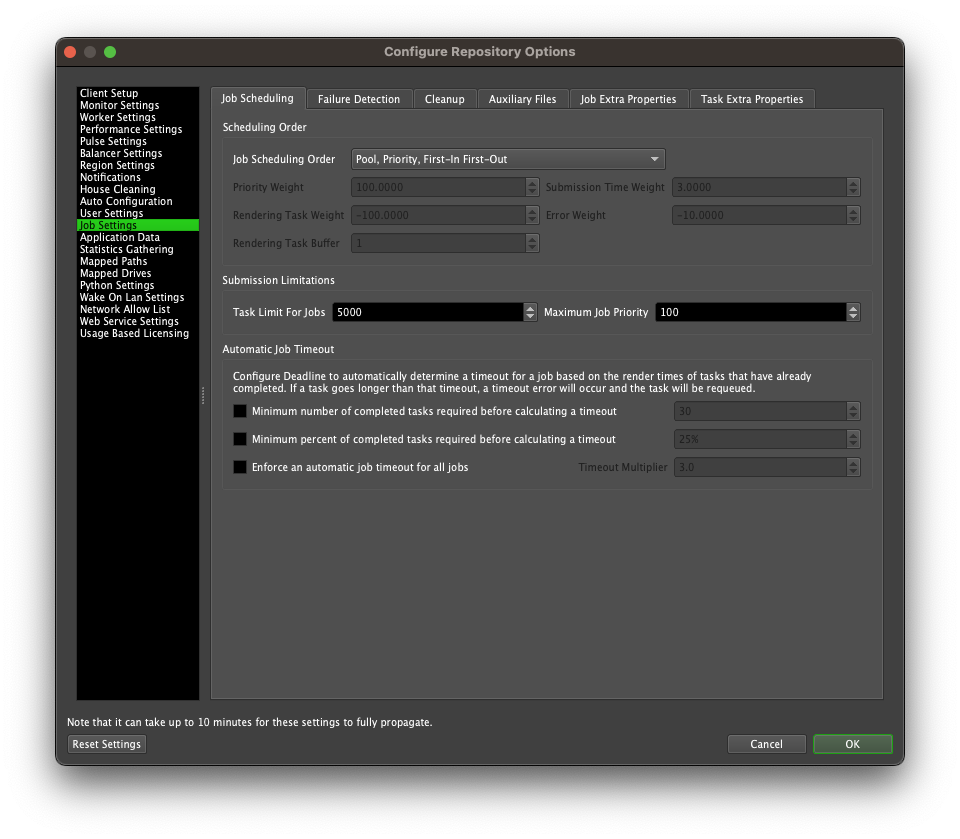

Job Scheduling¶
How a Job is Selected by a Worker¶
By default, a job is selected by a Worker based on the following properties, in this order:
The Pools and Groups that the Job has been submitted to.
A Worker will only select a Job if it has been assigned to the Pool and Group to which the Job belongs.
Pools are priority-based, so a Worker will favour Jobs in Pools that are higher on its priority list. This ordering can be configured on a per-Worker basis through the Manage Pools utility.
Groups are not priority-based, and are typically just used to ensure that Jobs render on machines with appropriate hardware and software configurations.
The Job’s Priority:
By default, a Job has a numeric Priority ranging from 0 to 100, where 0 is the lowest priority and 100 is the highest priority. You can adjust the maximum Job priority in the Job Settings section of the Repository Configuration.
Everything else being equal, the highest Priority Job will always be chosen first when a Worker is selecting its next Job.
The Date and Time at which the Job was submitted:
This is set automatically and is the timestamp of when the Job was submitted to Deadline.
Everything else being equal, an older Job will take priority over a newer Job when a Worker is looking for a new one.
The Job’s Limits and Machine Limits
With Limits, if a Job has the highest priority, but requires a Limit that is maxed out, a Worker will try to select a different Job.
A Machine Limit is a special type of Limit that restricts the number of machines that can render that particular Job at the same time.
Changing the Scheduling Order¶
It is possible to change the order in which Jobs are scheduled in the Job Settings section of the Repository Configuration.
The following options are available:
First-in First-Out: Job order will be based solely on submission date, and will be rendered in the order they are submitted.
Pool, First-in First-Out: Job order will be based on the job’s pool first, with submission date being the tie-breaker.
Pool, Priority, First-in First-Out: This is the default scheduling order that is used. Job order will be based on the job’s pool, then priority, with submission date being the tie-breaker.
Priority, First-in First-Out: Job order will be based on the job’s priority first, with submission date being the tie-breaker.
Priority, Pool, First-in First-Out: Job order will be based on the job’s priority, then pool, with submission date being the tie-breaker.
Balanced: Job order will be balanced so that each job has the same number of Workers rendering them at a time.
Pool, Balanced: Job order will be based on the job’s pool first, with a balance being applied to jobs that are in the same pool.
Pool, Priority, Balanced: Job order will be based on the job’s pool, then priority, with a balance being applied to jobs that have the same pool and priority.
Priority, Balanced: Job order will be based on the job’s priority first, with a balance being applied to jobs that have the same priority.
Priority, Pool, Balanced: Job order will be based on the job’s priority, then pool, with a balance being applied to jobs that have the same pool and priority.
Weighted, First-in First-out: A weighted system that takes priority, submission time, number of rendering tasks, and number of job errors into account, but does not take pools into account. If two or more jobs have the same calculated weight, the submission date will act as the tie-breaker.
Pool, Weighted, First-in First-out: A weighted system that still respects pool priority. If two or more jobs have the same calculated weight, the submission date will act as the tie-breaker.
Weighted, Balanced: A weighted system that takes priority, submission time, number of rendering tasks, and number of job errors into account, but does not take pools into account. A balance will be applied to jobs that have the same calculated weight.
Pool, Weighted, Balanced: A weighted system that still respects pool priority. A balance will be applied to jobs that have the same calculated weight.
Note that the Secondary Pool feature was designed for job scheduling orders that have Pool listed first, and might not work as expected otherwise. For example, if Priority is listed first, a job with lower priority that’s found during the initial Primary Pool scan will be preferred over a job with higher priority that’s found during the Secondary Pool scan. This is because the Secondary Pool scan is only performed if no jobs are found during the initial Primary Pool scan. See the Pools and Groups documentation for more information.
Balanced Scheduling¶
For the balanced options, you can can have Workers give the job they are currently working on more priority using the Rendering Task Buffer. This can help prevent Workers from jumping between jobs. For example, if this is set to 3, a Worker will only drop its current job for another one if the other job has more than 3 less rendering tasks than the current job.
Weighted Scheduling¶
For the weighted options, you can control how much weight is applied to the job priority, submission time, number of rendering tasks, and number of errors. You can also give weight to the job that the Worker is currently working on using the Rendering Task Buffer. The buffer is subtracted from the rendering task count for the current job, which pushes it higher in the queue.
Deadline then sorts by this weight so that jobs with the largest weight value have the higher priority. Note that the weight values can be negative. For example, if you set a negative weight value to the number of job errors, a job with more errors will end up having a lower overall weight so that precedence is given to other jobs in the queue.
Here is how the weight is calculated:
weight = (job.Priority * PW) +
(job.Errors * EW) +
((NOW - job.SubmissionTimeSeconds) * SW) +
((job.RenderingTasks - RB) * RW)
Where:
PW = priority weight
EW = error weight
SW = submission time weight
RW = rendering task weight
RB = rendering task buffer
NOW = the current repository time
Note that because the job submission time is measured in seconds, it will have the greatest impact on the overall weight. Reducing the SW value can help reduce the submission time’s impact on the weight value.

{kind=link}